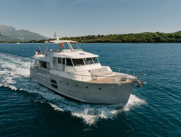

B-Atlas Boat Guide · BENE-52
Beneteau Swift Trawler 52 Flybridge Flagship
2008–2012
The Beneteau Swift Trawler 52 is an early large flagship of the Swift Trawler family, combining a 55-foot overall envelope, twin diesels, large tankage and a substantial flybridge. It is a yacht-scale cruising platform rather than a compact trawler.

- LOA
- 55′ 9″ / 17 m
- LWL
- 48′ / 14.63 m
- Beam
- 16′ 2″ / 4.92 m
- Draft
- 3′ 11″ / 1.2 m
- Hull behaviour
- Semi-Displacement
- Fuel
- Diesel
- Propulsion
- Shaft
- Engine configuration
- Twin diesel inboards up to 600 hp each
- Boat family
- Trawler
- Construction
- Fiberglass
Best for
- Experienced owners seeking large-volume long-distance cruising
- Families needing three cabins and substantial tankage
- Buyers with yacht-scale dockage and service access
Trade-offs
- 16-foot-plus beam and 21-foot air draft impose major infrastructure limits
- Large twin-diesel systems carry high operating and maintenance costs
- Older examples now require age-sensitive inspection of complex domestic systems
Known concerns
- No model-specific concern has been promoted to B-Atlas’s evidence threshold. This does not mean the model has no age-, condition- or hull-specific risks.
Inspection focus
- Inspect twin engines, shafts, fuel and exhaust systems
- Inspect flybridge and deckhouse for weather exposure and leaks
- Review generator, chargers, batteries and AC/DC distribution
- Inspect tanks, sanitation and domestic water systems
- Verify bridge clearance with antennas and electronics
Continue researching
Related boat models
Beneteau Swift Trawler 47 Flybridge
48.36 ft · Semi-Displacement
Beneteau Swift Trawler 48 Flybridge
48.36 ft · Semi-Displacement
Kadey-Krogen 48 North Sea North Sea
53 ft · Displacement
Helmsman 46 Pilothouse Pilothouse
50.08 ft · Semi-Displacement
Beneteau Swift Trawler 35 Flybridge
37.04 ft · Semi-Displacement
Kadey-Krogen 44 AE Advanced Ergonomics
49 ft · Displacement
About this record
B-Atlas preserves uncertainty: missing information remains unknown rather than being treated as a negative. Specifications and guidance describe the model record; individual boats can differ by year, equipment, refit and condition.